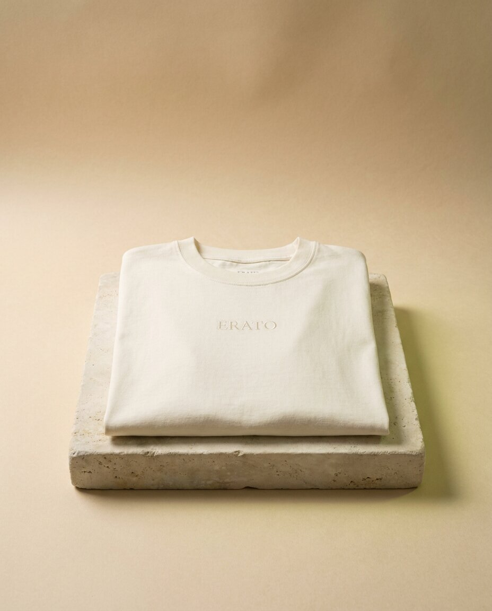

Most t-shirt listings give you a size chart and nothing else. The fabric matters more. It decides how the shirt hangs, how long it lasts and how well a large print sits on it. Here is what the numbers mean.
What gsm means
GSM is grams per square metre, the weight of the fabric. A light everyday tee is usually somewhere around 140 to 180gsm. Ours are 280gsm, which is a heavyweight cotton. You feel it straight away: the fabric has body, it does not cling and it does not go see-through.
Why we chose 280
- Drape. Heavy cotton falls in clean lines instead of clinging, which is what an oversized cut needs.
- Print. A dense, smooth surface holds a large A3 print flat, so the image stays sharp.
- Wear. Heavier cotton keeps its shape through repeated washing.
What stone-washing does
Stone-washing is a finishing step that softens the fabric and gives it a slightly lived-in look. The shirt feels worn in from the first day, and the colour sits a little more naturally, which is why our Washed Charcoal tees look faded and soft rather than flat black.
How the fit works
Our tees are cut oversized with a dropped shoulder. The shoulder seam sits lower on your arm, the body is roomy and the sleeves are wide. They come in S, M, L and XL. If you like the slouch you see in our photos, take your usual size. If you want it closer to the body, go one size down. Not sure? Message us on Instagram and we will help you choose.
How to look after it
- Wash cold, inside out.
- Skip high heat in the dryer. Air drying keeps the print and the fabric at their best.
- If you iron it, turn it inside out and keep the iron off the print.
See it on a piece: Caparison in Bone, or Kanagawa in Washed Charcoal. Each is USD 44.